Overview
為百貨官網重新定義數位角色：從使用者研究出發，找出不同性格的消費者被吸引的資訊形式，重新規劃官網的設計策略與架構。
Design Process
以一連串的收斂與發散推進：Envision → Research → Insights & Ideation → Concept Design → Solution Prioritization → Detail Design & Iteration。
User Research
篩選不同類型的受訪者，包含無百貨通路消費習慣者、使用多個新光數位渠道的用戶、重度消費者與相關從業人員，深入了解他們使用數位工具的情境與期待。
Insight & Strategy
依用戶性格將消費者歸納為感覺派、務實派、跟隨型、主導型，發現不同性格的用戶容易被吸引的資訊形式也不盡相同，並據此訂定官網的設計策略與資訊架構。
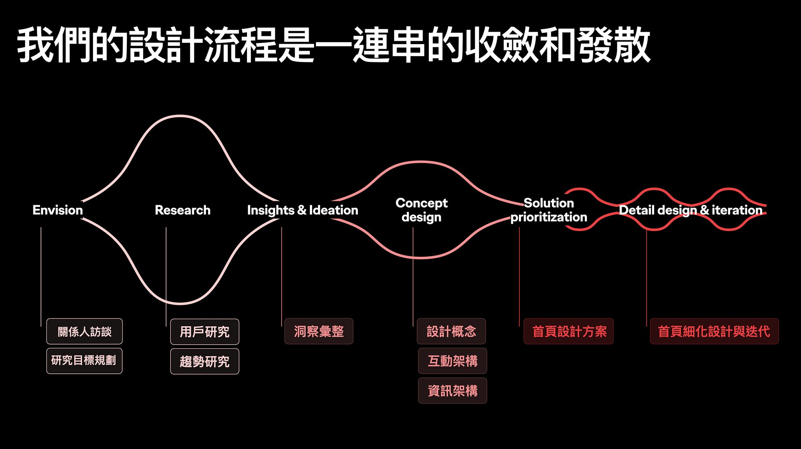
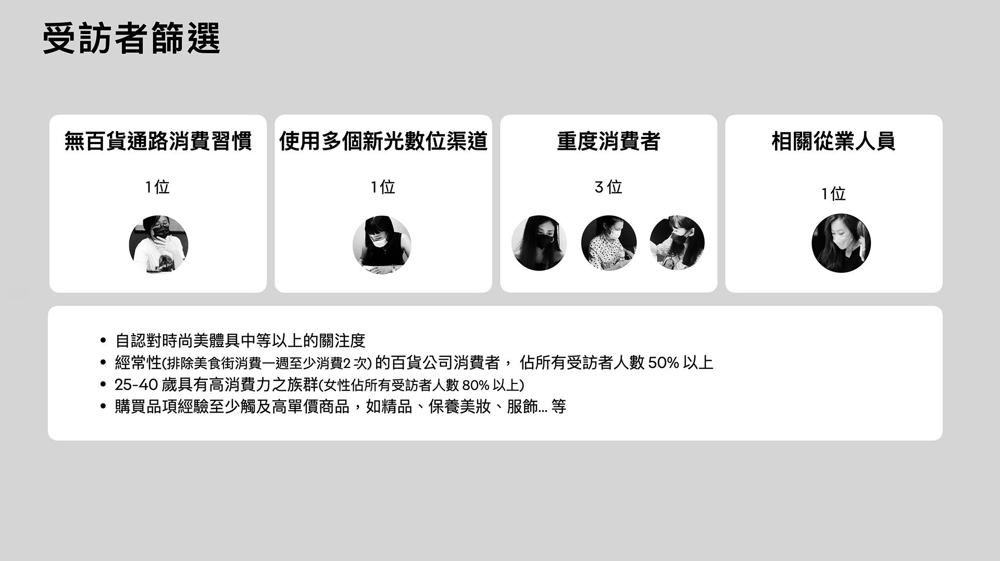
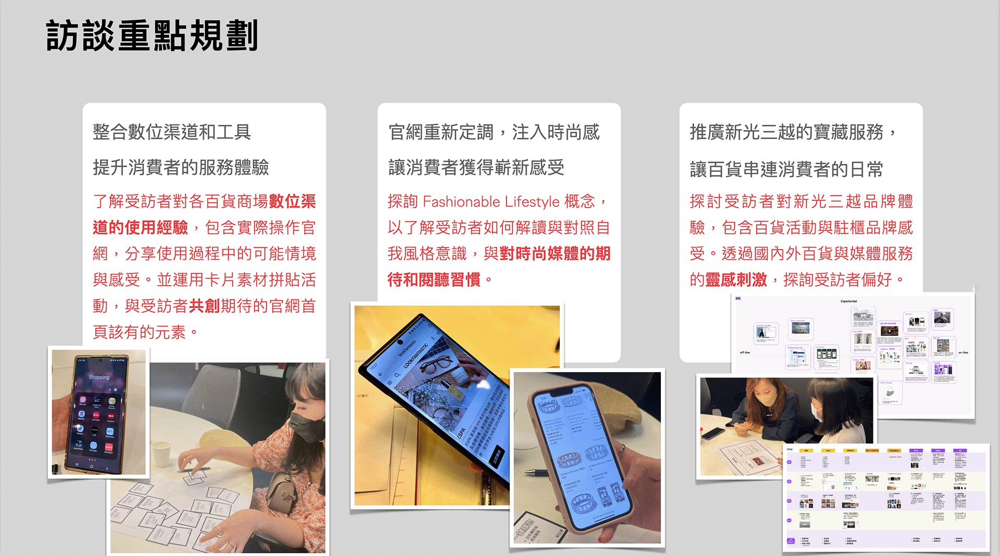
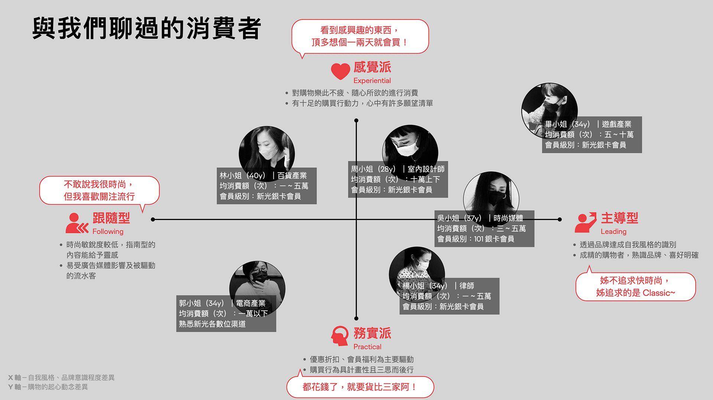
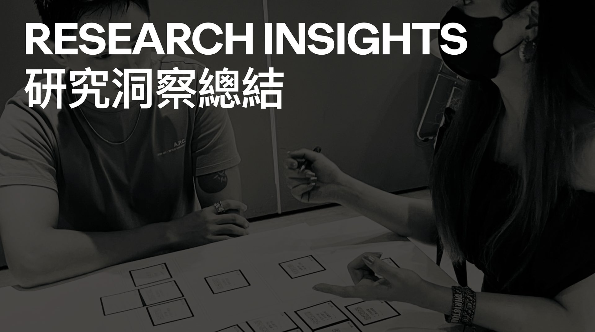
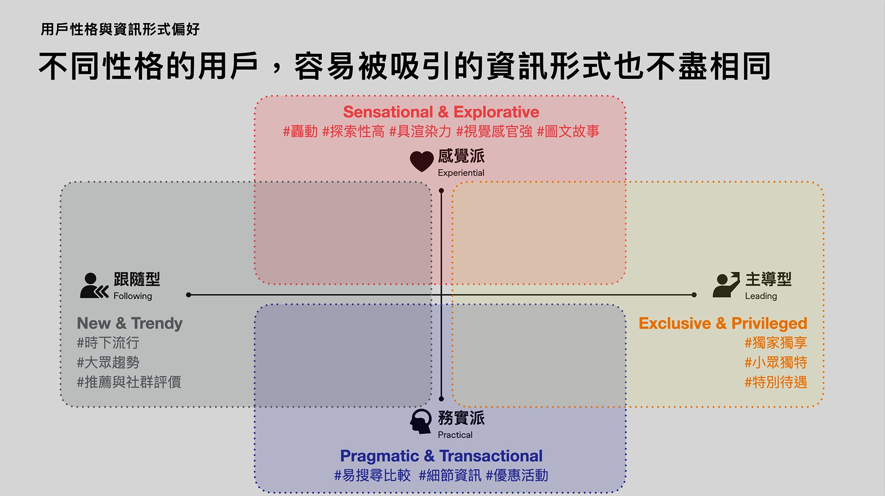
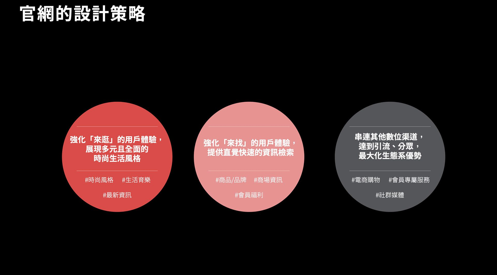
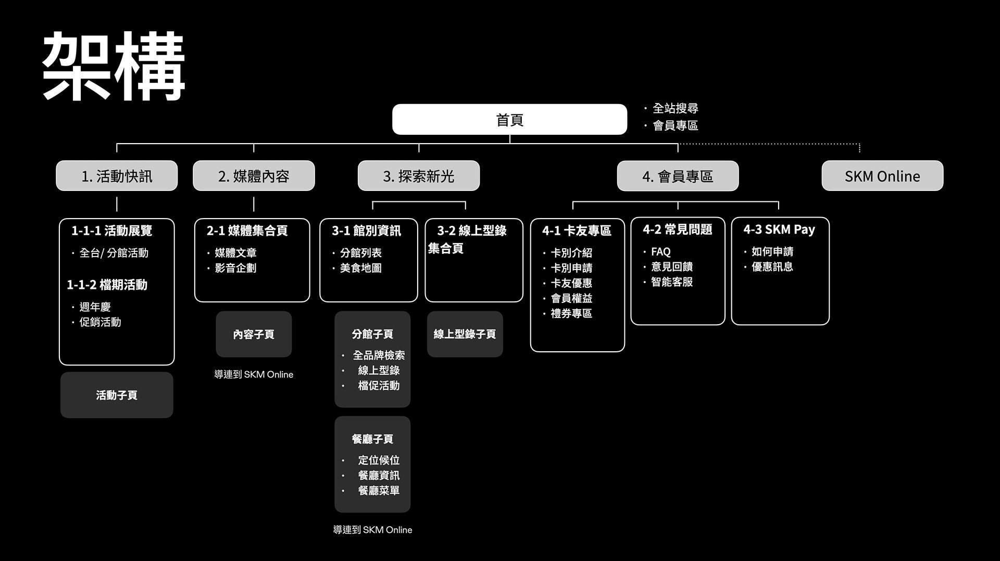
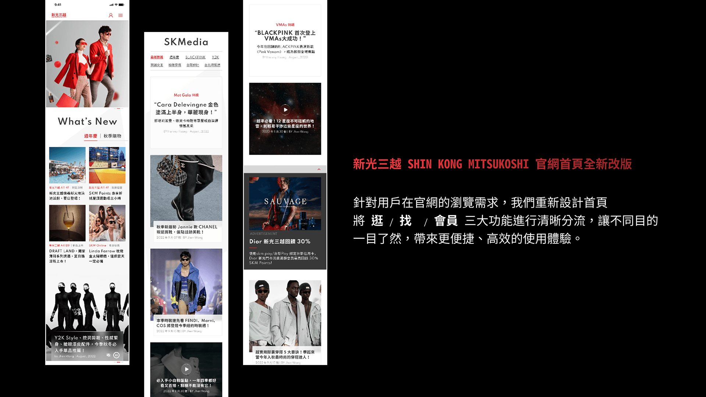
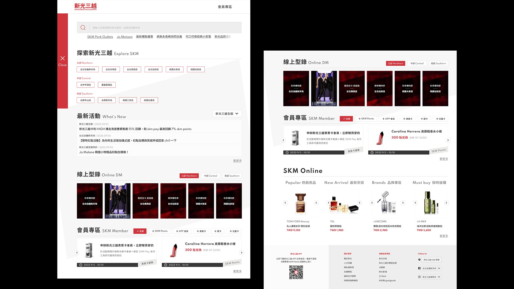
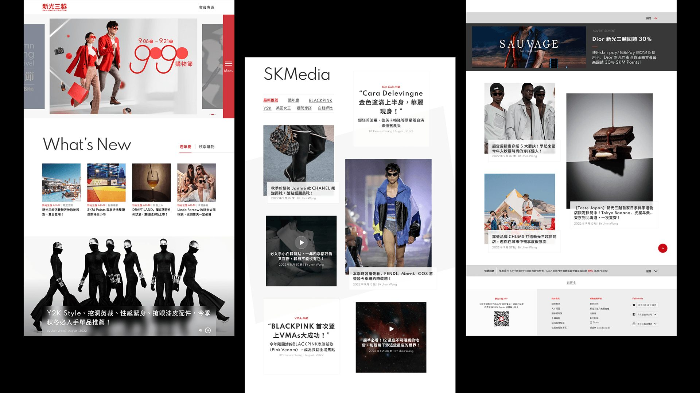